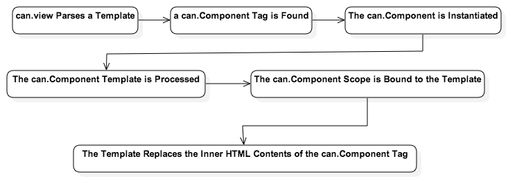
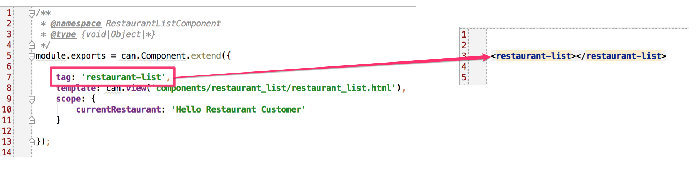
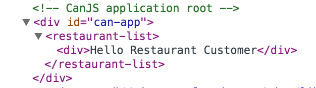
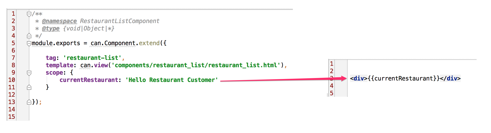
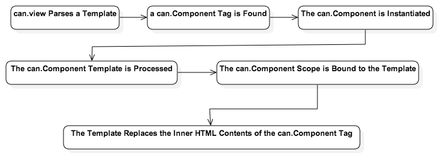
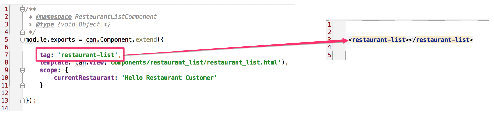
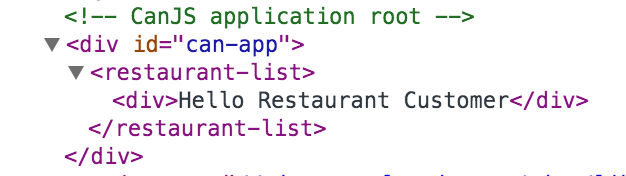
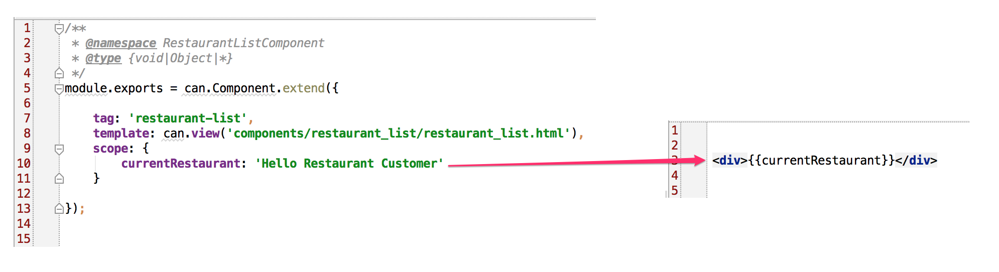

If you recall from the introduction, a can.Component is like a self-contained,
mini web application—i.e., it's encapsulated. Because can.Component's are
encapsulated, they should each contain their own:
View template file (.stache file)
JavaScript file
CSS file
This is why we created a components folder for our app — instead of, say, a
js folder. Each component we develop will be in a folder that contains all
the files that support that component. This makes components portable,
enabling you to reuse them across projects. It also isolates them, making
them easier to test and maintain.
In the components folder, create a subfolder called restaurant_list, along with the following files:
Now, go back out to your app in the browser and refresh it. You should
see it printing: "Hello Restaurant Customer".
Auto Instantiation
If you recall from the discussion above regarding can.Construct, whenever you
declare an object using can.Construct, it must be instantiated. Normally, you
would either directly instantiate objects using the new keyword, or pass the
constructor to an object that would create instances of it. can.Component is
an exception.
All we have to do is declare the can.Component using its extend function.
Once you declare your can.Component, you've registered your component with CanJS.
When CanJS parses the base_template.stache file and encounters the
<restaurant-list> tag, it will automatically instantiate the can.Component
associated with it, generate the Component's view inside of its custom tag,
and bind that view to your component's scope.
Let's look at an image that describes how all of this works, to make it
clearer:

Basic Anatomy of a can.Component
The can.Component we created above had three properties.
The can.Component's tag property associates that
can.Component with a specific, custom HTML tag:

As mentioned above, when the template containing the can.Component's tag is
parsed, the can.Component is instantiated and the contents of its rendered
template are inserted as the HTML contents of the custom tag:

Template
The template property of the can.Component contains the string
value of the can.Component's template. Note that the template property just
contains a string value. You can inline the template, if it is small. However,
the recommended way of working with templates, to maintain separation of
concerns, is to keep them in their own files and load them using can.view, as
we have done here.
Scope
The scope object is the can.Component's view model. The view
model is an abstraction of the view that exposes public properties and
functions. Any property or function defined on the scope object is available
from the can.Component's template as either a Stache data key, or a function.
In our example above, we created the property currentRestaurant and then
referenced it as a Stache data key in our template.

can.Map & can.List
The scope is a special type of object, called a
can.Map. can.Map objects are observable. Observable objects provide a way
for you to listen for and keep track of changes to them. What this means, in
this instance, is that if you make a change to your scope, those changes will
be reflected automatically in your view. If you've cross-bound the values
between your scope and your view, changes to your view will also be reflected
in your scope. We'll see how this works in the next chapter.
can.Map objects listen for changes made using their attr function. This is
important. In order to broadcast the associated events when you change a
property on a can.Map, you must use the attr function when setting a value.
The attr function can be used to either get or set a property on a can.Map.
attr works with deep properties—i.e., properties within properties. Here's
an example:
// Get the first property off of the name property off of person
myCanMapInstance.attr('person.name.first');
// Set the last property of the person's name property
myCanMapInstance.attr('person.name.last', 'Bach');
Observable arrays are also available with can.List, which is based on can.Map.
In this Chapter
extendfunctioninitfunctionGet the code for: chapter 2
First can.Component
If you recall from the introduction, a can.Component is like a self-contained, mini web application—i.e., it's encapsulated. Because
can.Component's are encapsulated, they should each contain their own:This is why we created a
componentsfolder for our app — instead of, say, ajsfolder. Each component we develop will be in a folder that contains all the files that support that component. This makes components portable, enabling you to reuse them across projects. It also isolates them, making them easier to test and maintain.In the components folder, create a subfolder called
restaurant_list, along with the following files:└── restaurant_list ├── restaurant_list.js └── restaurant_list.stacheLet's dive in to the good stuff, and start working with the app! Put the following code inside
restaurant_list.js:Add the following code to
restaurant_list.stache:Add the code below to the
app/base_template.stachefile:Next, open up your
app.jsfile, and edit it as follows:For the moment, if you don't know what
can.viewdoes, don't worry. We'll go over it in detail soon.Finally, we need to add a reference to
restaurant_list.jsin the index.html file, as follows:Now, go back out to your app in the browser and refresh it. You should see it printing: "Hello Restaurant Customer".
Auto Instantiation
If you recall from the discussion above regarding
can.Construct, whenever you declare an object usingcan.Construct, it must be instantiated. Normally, you would either directly instantiate objects using thenewkeyword, or pass the constructor to an object that would create instances of it.can.Componentis an exception.All we have to do is declare the
can.Componentusing itsextendfunction. Once you declare yourcan.Component, you've registered your component with CanJS. When CanJS parses thebase_template.stachefile and encounters the<restaurant-list>tag, it will automatically instantiate thecan.Componentassociated with it, generate the Component's view inside of its custom tag, and bind that view to your component's scope.Let's look at an image that describes how all of this works, to make it clearer:

Basic Anatomy of a can.Component
The
can.Componentwe created above had three properties.The "tag" Property
The
can.Component'stagproperty associates thatcan.Componentwith a specific, custom HTML tag:
As mentioned above, when the template containing the
can.Component's tag is parsed, thecan.Componentis instantiated and the contents of its rendered template are inserted as the HTML contents of the custom tag:
Template
The
templateproperty of thecan.Componentcontains the string value of thecan.Component's template. Note that the template property just contains a string value. You can inline the template, if it is small. However, the recommended way of working with templates, to maintain separation of concerns, is to keep them in their own files and load them usingcan.view, as we have done here.Scope
The
scopeobject is thecan.Component's view model. The view model is an abstraction of the view that exposes public properties and functions. Any property or function defined on the scope object is available from thecan.Component's template as either a Stache data key, or a function. In our example above, we created the propertycurrentRestaurantand then referenced it as a Stache data key in our template.
can.Map & can.List
The
scopeis a special type of object, called a can.Map.can.Mapobjects are observable. Observable objects provide a way for you to listen for and keep track of changes to them. What this means, in this instance, is that if you make a change to your scope, those changes will be reflected automatically in your view. If you've cross-bound the values between your scope and your view, changes to your view will also be reflected in your scope. We'll see how this works in the next chapter.can.Mapobjects listen for changes made using theirattrfunction. This is important. In order to broadcast the associated events when you change a property on acan.Map, you must use theattrfunction when setting a value.The
attrfunction can be used to either get or set a property on acan.Map.attrworks with deep properties—i.e., properties within properties. Here's an example:Observable arrays are also available with can.List, which is based on
can.Map.‹ Application Foundations More on Components ›